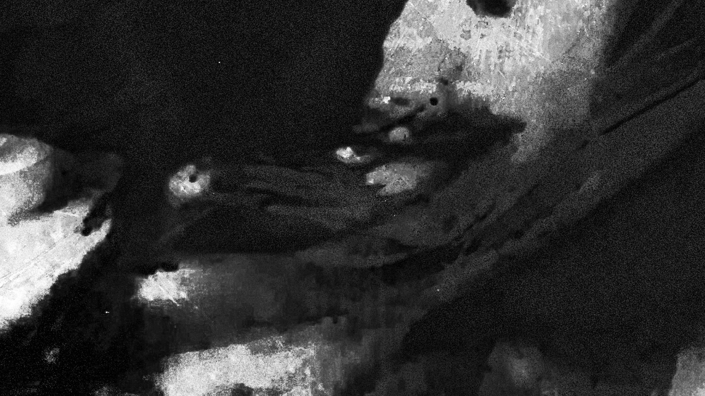
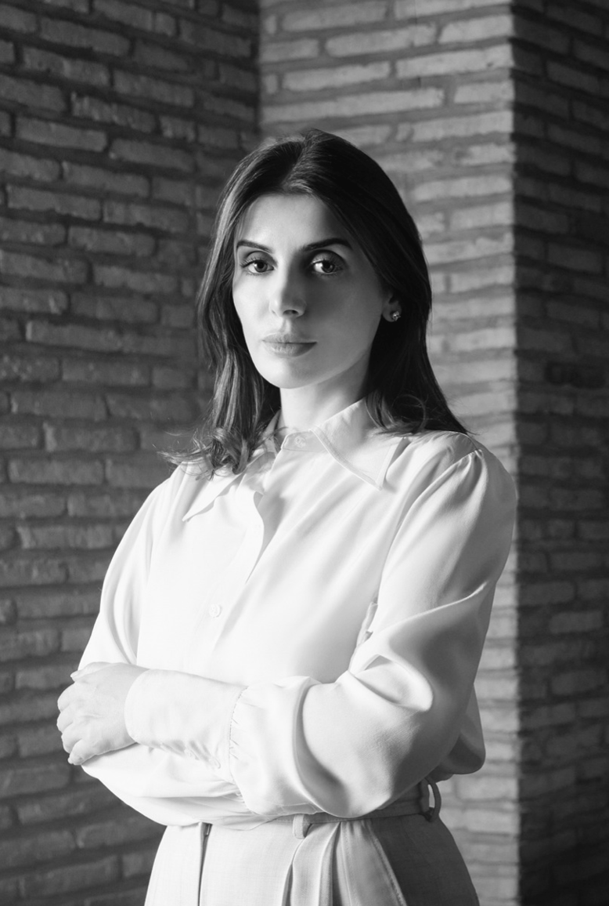

Get in touch
Questions about the Bukhara Biennial?
The Uzbekistan Art and Culture Development Foundation (ACDF)
preserves, promotes and supports the country’s cultural heritage,
arts and contemporary culture. The Foundation works to strengthen
the cultural ecosystem, foster the creative economy and create
opportunities for professionals at local and international levels.
ACDF believes that culture plays a vital role in shaping society,
connecting communities and advancing intercultural dialogue.
Among its key initiatives are the Centre for Contemporary Art in
Tashkent (opening in 2026), the development of the new State
Museum of Uzbekistan designed by Tadao Ando, and major
international projects such as the Bukhara Biennial and the Aral
Culture Summit.
Through exhibitions and collaborations with leading institutions
worldwide — including the Louvre, the British Museum and the
Uffizi Galleries — ACDF continues to amplify Uzbek culture on the
global stage.
The Bukhara Biennial connects contemporary art with the living heritage of Bukhara. Across historic mosques, madrasas, and public spaces, artists and artisans from Uzbekistan and around the world create new dialogues between tradition and contemporary practice.


Gayane Umerova is dedicated to advancing Uzbekistan’s cultural
sector and strengthening the role of arts and heritage in society.
She serves as Head of the Department of Creative Economy and
Tourism of the Administration of the President of Uzbekistan,
Chairperson of the Uzbekistan Art and Culture Development
Foundation, and Chairperson of the 25th session of the UNESCO
General Assembly.
Gayane Umerova leads key cultural initiatives, including the
restoration of the Centre for Contemporary Arts in Tashkent,
opening in March 2026, and the construction of the new National
Museum of Uzbekistan, designed by Tadao Ando. She also
commissioned the inaugural Bukhara Biennial in Bukhara, which
welcomed over one and a half million visitors.
The Bukhara Biennial has launched an Advisory Board to guide the development of the next edition. Made up of leading international figures from the fields of contemporary art, culture, and academia, the Board provides strategic guidance on the biennial’s artistic vision, programme, and global engagement. By creating a platform for the exchange of knowledge and ideas and fostering meaningful institutional collaborations, the Advisory Board will help extend the scope and impact of the biennial, supporting its long-term development and international resonance. Drawing on expertise and multiple perspectives, the Advisory Board supports the biennial’s mission to foster meaningful dialogue between contemporary artistic practice
Questions about the Bukhara Biennial?